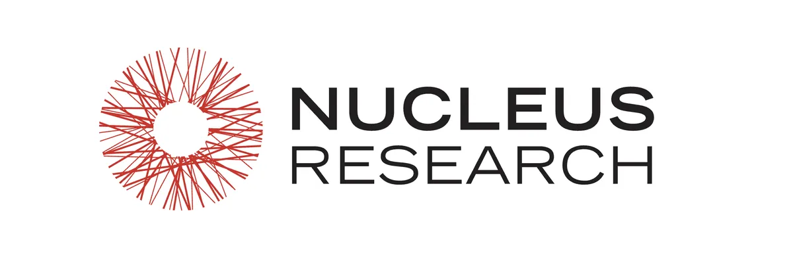
Research Portfolio
Full Research Portfolio
Complete collection of 159 published reports on supply chain management, AI tools, ERP modernization, and ROI analysis at Nucleus Research.
Browse Research Portfolio →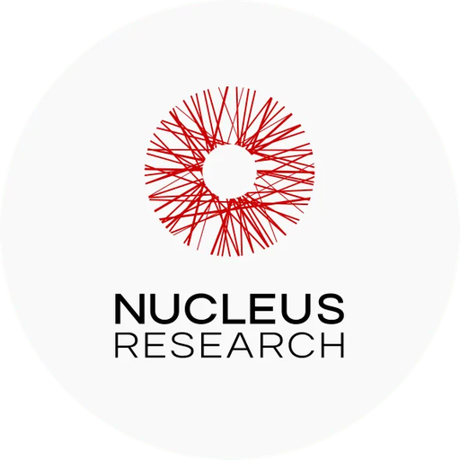
Nucleus Research is where my advisory practice took shape. I joined in July 2022 as an analyst, grew into a senior analyst role, and today I manage, cover, and advise across ERP, supply chain planning, warehouse management, transportation management, order management, control towers, manufacturing execution, quality management, PLM, IIoT data platforms, source-to-pay and procurement, AR management, connected worker technologies, and AI. The core of the job is evaluating how enterprise systems actually create business value: ROI case studies, Value Matrix vendor evaluations, technology assessments, competitive analysis, and market positioning research. The work sits on both sides of the market. Technology buyers use it to choose and justify systems; vendors use it to sharpen product positioning, competitive strategy, and technology investment priorities. Either way, the standard is the same: conclusions backed by customer evidence and quantified outcomes, not marketing claims.
What distinguishes the work is the combination of analytical rigor and operator experience. Having run supply chain operations at TLF Apparel before becoming an analyst, I evaluate technology the way a practitioner would use it, which resonates with both end users and solution providers. That perspective carries into hundreds of vendor briefings and customer interviews, where I synthesize customer feedback into strategic recommendations for executive leadership teams, and into the conference presentations, executive briefings, webinars, podcasts, and customer advisory sessions where I translate complex technology and market trends for executive audiences. Increasingly the role also means developing people: mentoring analysts, accelerating their onboarding, reviewing research, and helping shape advisory engagements in close partnership with business development.
The work below shows that practice in public: more than 159 research reports published on the Nucleus Research website and Bloomberg Terminal and referenced across enterprise software vendor sites, plus webinars, podcasts, and conference speaking. That body of work has generated more than $2.7M in cumulative research and advisory revenue, made me the firm's highest revenue-producing analyst in 2025, and built the long-term advisory relationships that keep research connected to real executive decisions.

Complete collection of 159 published reports on supply chain management, AI tools, ERP modernization, and ROI analysis at Nucleus Research.
Browse Research Portfolio →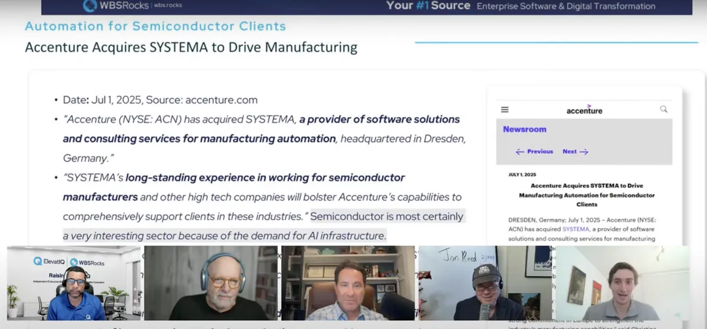
Latest episode covering Salesforce Marketing Cloud Next details, Cordial's price sensitivity feature, Agentforce 3 release, Accenture's SYSTEMA acquisition, and Campfire's $35M Series A funding.
Watch Episode →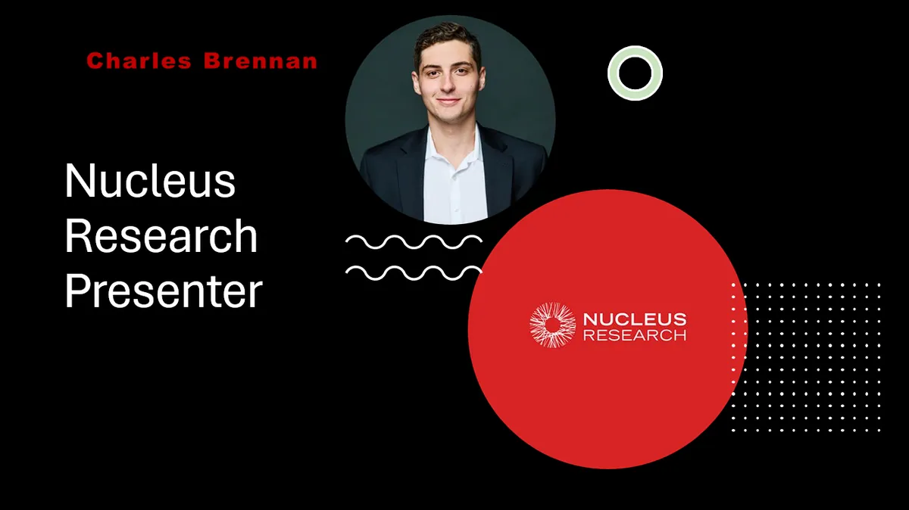
Expert insights into browser-based ERP systems and digital transformation for building supply businesses, featuring Epicor BisTrack Web demonstration.
Watch Now →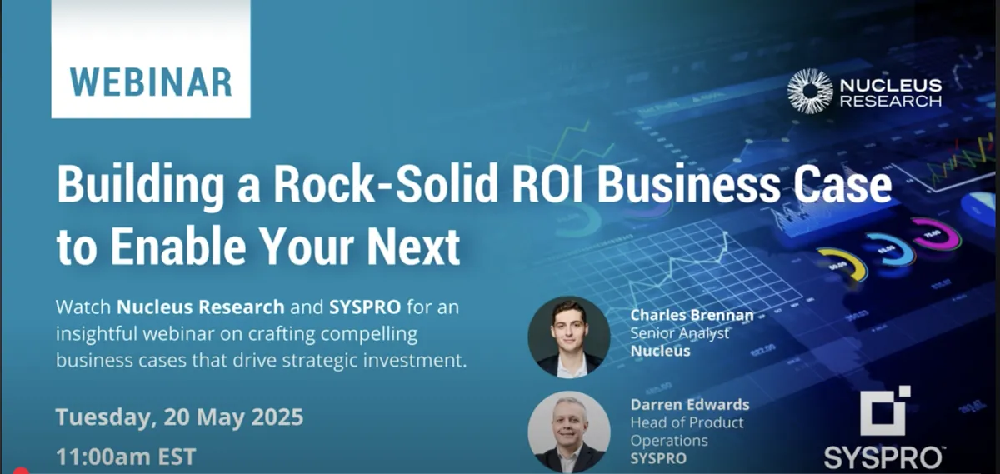
ROI analysis and business case development for ERP implementations.
Watch Now →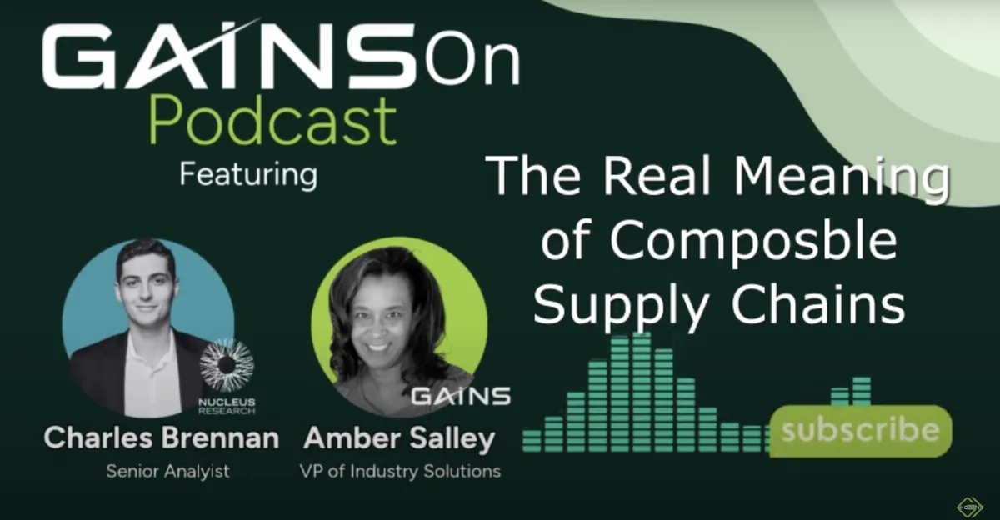
Podcast discussion with GAINS on composable architecture and its impact on supply chain operations.
Listen Now →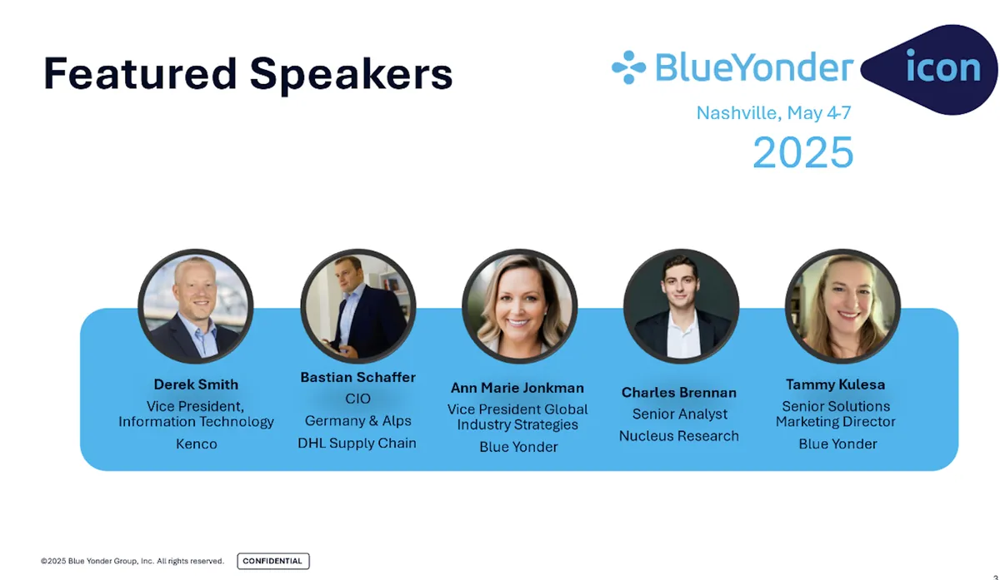
Featured speaker at Blue Yonder ICON 2025 in Nashville, discussing logistics operations, supply chain transformation and technology trends.
Event Details →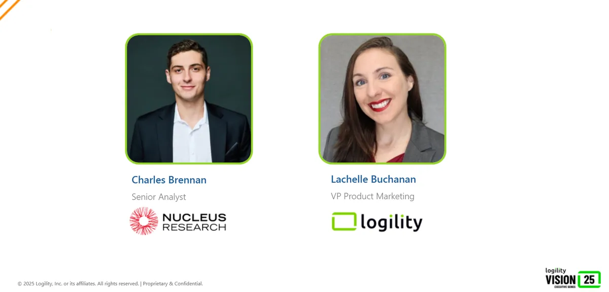
Expert discussion on how businesses can optimize inventory, boost customer service, and reduce costs with advanced supply chain strategies.
Watch Now →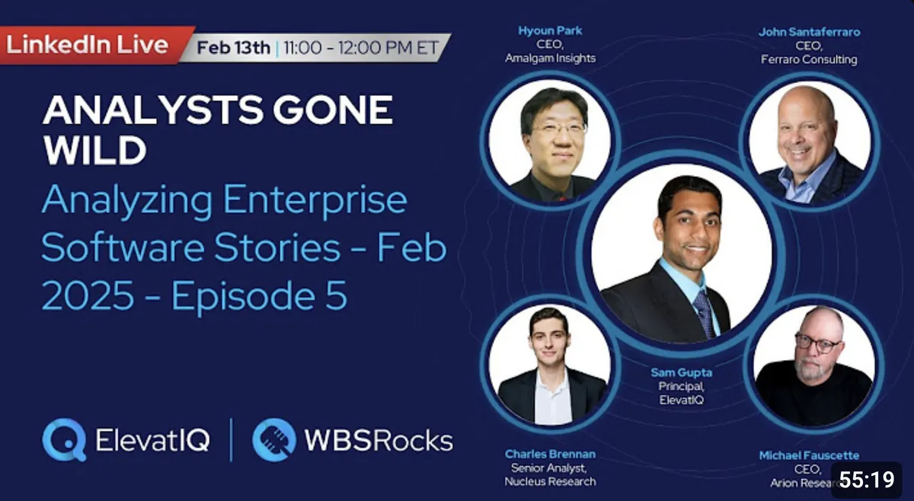
Enterprise software analysis covering Microsoft Copilot criticism, HubSpot's Agent.ai launch, Salesforce AI agents for retailers, commercetools InStore launch, and Rootstock's Scion platform expansion.
Watch Episode →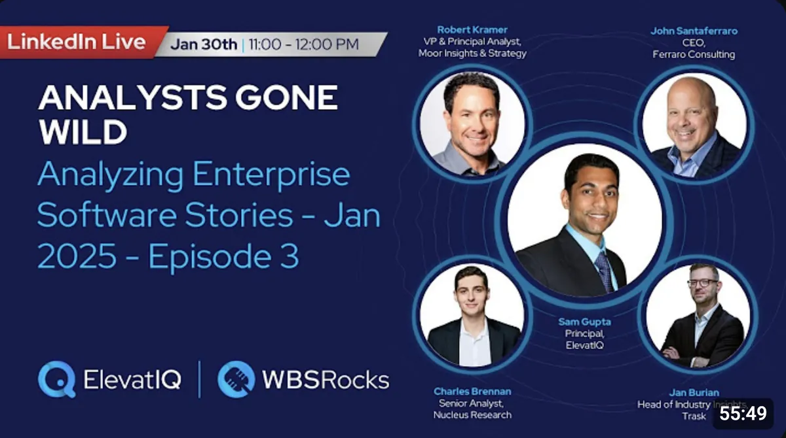
Group of analysts providing analysis on enterprise software stories including HubSpot's Frame AI acquisition, ZenaTech quantum computing initiatives, and Bamboo Rose's AI-fueled decision intelligence platform.
Watch Episode →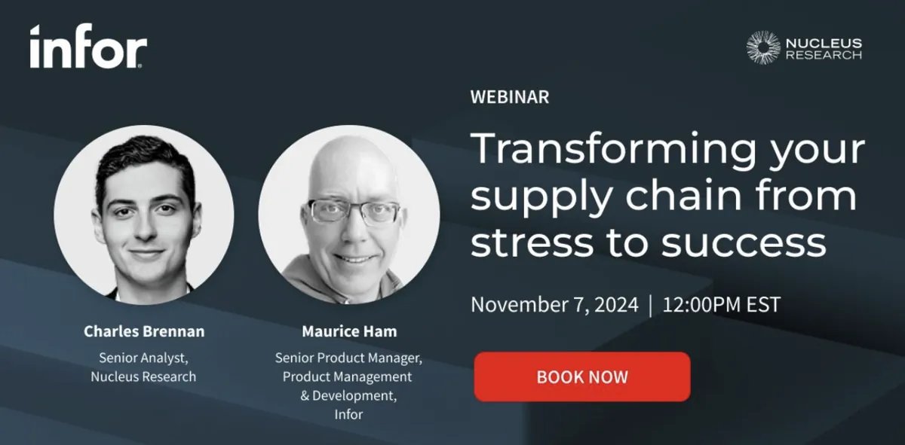
Deep dive into supply chain transformation strategies and best practices with Infor solutions.
Watch Now →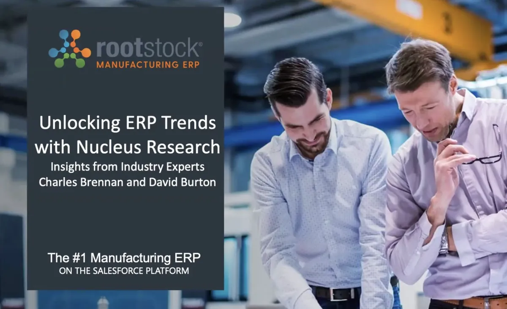
Analysis of current ERP market trends and future outlook with Rootstock Cloud ERP.
Watch Now →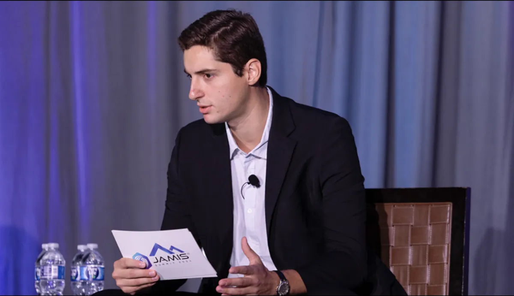
Speaking engagement at JAMIS Summit 2024 in Dallas, presenting on enterprise software analysis and implementation strategies.
Watch Video →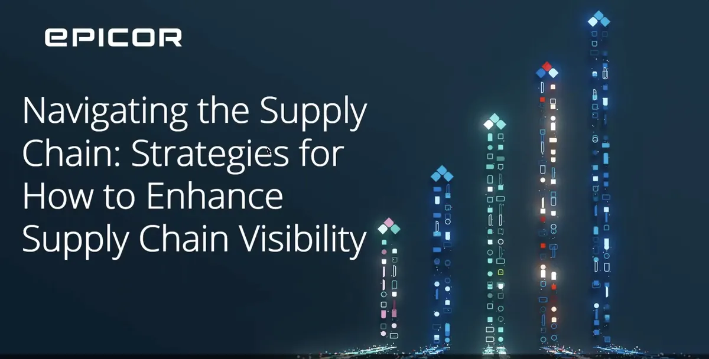
Webinar discussing strategies for improving supply chain visibility and transparency with Nucleus Research insights.
Watch Now →A snapshot of events I've covered across the U.S. and abroad.
Highlights and moments from my time as Senior Analyst at Nucleus Research.